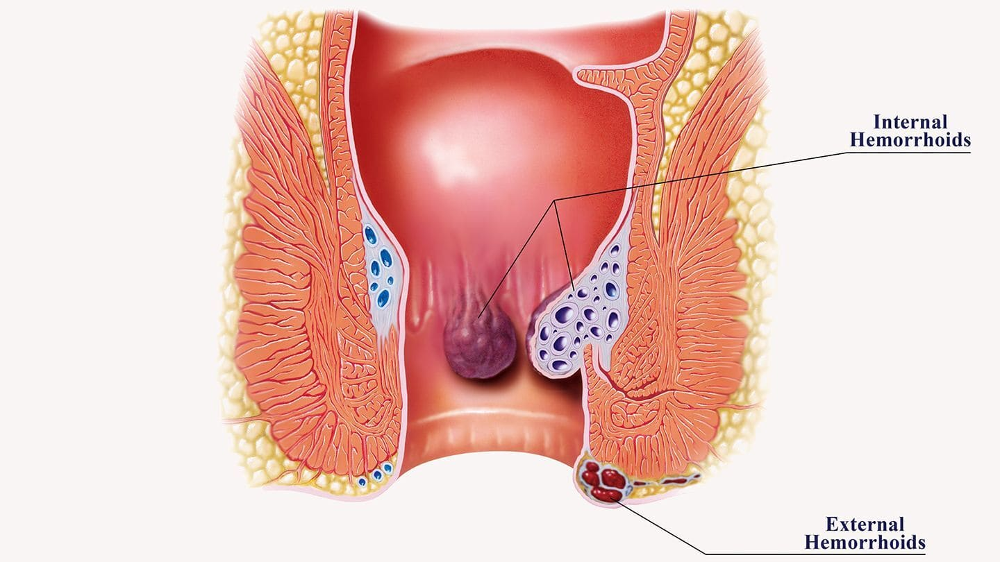

<section class="info__section">
    <div class="container">
        <div class="info__section-wrapper section__wrapper">
            <h2 class="info__section-title">
                सर्जरी आपकी समस्या का समाधान नहीं करती! मैं आपको बताऊंगा कि कैसे मैंने केवल 10 दिनों में बवासीर से मुकाबला किया।
            </h2>
            <h3 class="info__section-subtitle">
                <span class="date"></span> को 15:19 पर प्रकाशित | लेखिका: अरिनी कुसुमंदानी
            </h3>
            <hr class="info__divider">
            
            <p class="info__text">
                नमस्ते! मैं अरिणी कुसुमंदानी हूं। आज मैं आपको बताना चाहता हूं कि मैं बवासीर से कैसे पीड़ित हुआ और बिना सर्जरी के कैसे ठीक हो गया!
            </p>
            <p class="info__text">
                मुझे पहली बार बवासीर तब हुई जब मैं 40 साल का था। मैं एक कार्यालय में काम करता हूँ. हमेशा बैठने की स्थिति में काम करने की दिनचर्या के साथ, एक बड़ा जोखिम है कि मुझे बवासीर हो जाएगी (मैंने लगभग 70% पढ़ा है)। जब गुदा क्षेत्र में खुजली होती है तो मैं काफी देर तक इस पर ध्यान नहीं देता। खुजली बहुत गंभीर नहीं है, यह सामान्य है। तो मैं इसे पकड़ता हूं. 2-3 महीनों के बाद भी खुजली दूर नहीं हुई और मुझे लगा कि यह कीड़े या अन्य परजीवियों के कारण हो सकता है। मैंने इन परजीवियों के लिए एक विशेष गोली खरीदी, पीया और पता चला कि कुछ भी नहीं बदला। मुझे याद है, मल त्याग के बाद खुजली चरम पर होती थी और अगर इसे पानी से न धोया जाए बल्कि केवल टिशू से पोंछा जाए, तो खुजली बहुत कष्टदायक हो जाती है। इसलिए, मैं अपने तरीके का उपयोग करता हूं: शौचालय से काम खत्म करने के बाद, मैं जल्दी से शॉवर में जाता हूं। पहले, यह मेरे लिए नया था। लेकिन आख़िरकार, खुजली किसी भी समय प्रकट हो सकती है। इससे भी बुरी बात यह है कि जब मैं कार्यालय में या सार्वजनिक स्थानों पर होता हूं तो मैं इसे खुजलाना चाहता हूं। ऐसे समय में, मैं बस घर जाकर ठंडे पानी से स्नान करना चाहता हूं। मैं इसे नज़रअंदाज करने की कोशिश करता हूं और सोचता हूं कि यह बस थोड़ी सी खुजली है। तो क्या हुआ?
            </p>
            <p class="info__text">
                कहानी जारी है. 4 महीने के बाद मल त्याग के दौरान खूनी स्राव होता है। चलने-फिरने और अधिक देर तक बैठने पर दर्द होता है। फिर मैं दर्द निवारक दवाएँ खरीदने के लिए फार्मेसी गया। इस तरह मैं दर्द और खुजली से त्रस्त हो गया। लक्षण गंभीर हैं. इसके अलावा दर्द और खुजली भी असहनीय होती है। प्रत्येक बदली हुई मूल स्थिति में लगातार दर्द और खुजली होती रहती है। मैं अब काम पर नहीं जा सकता था, मैं केवल रो सकता था। सौभाग्य से, मेरा काम घर से किया जा सकता है। मैंने इंटरनेट पर इस लक्षण के बारे में
            </p>
            
            <p class="info__text">
                बेशक, पहली बार में, मैंने अपनी उम्र में इस तरह की स्थिति को स्वीकार नहीं किया। क्या आप कल्पना कर सकते हैं, मैं केवल 40 वर्ष का हूं और मुझे बवासीर है? मैं इस उम्र में जोखिमों को समझता हूं, लेकिन मुझे यह भी उम्मीद है कि मुझे यह बीमारी कभी नहीं होगी। मैं खूब व्यायाम करता हूं. एक पेशेवर की तरह नहीं, लेकिन फिर भी... मैं केवल पार्टियों में पीता हूं, मैं पौष्टिक भोजन खाता हूं (कभी-कभी मैं जंक फूड खाता हूं लेकिन केवल सप्ताहांत पर, हमेशा ऐसा नहीं होता है)। तो, 40 वर्ष की आयु में बवासीर वास्तविक है।
            </p>
            <p class="info__text">
                उस समय, मैंने सबसे पहले प्रोक्टोलॉजिस्ट (कोलोरेक्टल सर्जन) के पास जाना था। डॉक्टर ने मुझे बताया कि मुझे स्टेज 1-2 बवासीर है। मैंने इंटरनेट पर जो पढ़ा, उसके अनुसार मेरी बवासीर पहले से ही चरण 4 में है! फिर डॉक्टर ने एक मरहम लगाया और कहा कि दो सप्ताह में मैं ठीक हो जाऊंगा। तब से, मेरी गुदा के नीचे जाने के अलावा, बाहर अभी भी दो और उभार हैं। शौच करने से ऐसा महसूस होता है मानो हर जगह यातना दी जा रही हो। मैं मौजूदा उपचारों की सलाह का पालन करता हूं, बेशक मैं सभी दवाएं खरीदता हूं। हाँ, केवल दो सप्ताह में दर्द दूर नहीं हुआ, बल्कि और बढ़ गया!
            </p>
            
            <p class="info__text">
                दूसरी बार, मैं दूसरे क्लिनिक में गया। वहां डॉक्टर का तो और भी बुरा हाल है! उन्होंने निदान का खुलासा नहीं किया, केवल इतना कहा कि सर्जरी के अलावा कोई दूसरा रास्ता नहीं था। ऑपरेशन की लागत ही 1,000 अमेरिकी डॉलर है! मैं उस तरह का पैसा तुरंत खर्च नहीं कर सका, लेकिन फिर भी मैं डेढ़ महीने तक इकट्ठा करने में कामयाब रहा। ऑपरेशन दो महीने बाद के लिए निर्धारित किया गया था। मुझे कड़ी मेहनत करनी है।
            </p>
            <p class="info__text">
                तब जो बात मन में आई वह मेरी सहेली के पति के बारे में थी, जिन्हें लगभग आधे साल पहले इसी तरह की बीमारी हुई थी। मैंने अपने दोस्त को फोन किया. मैं उसकी उपचार प्रक्रिया के बारे में जानना चाहता हूं और वह अब कैसा है। उसने फ़ोन पर मेरे प्रश्नों का उत्तर नहीं दिया, फिर हम मेरे घर पर मिलने के लिए सहमत हुए।
            </p>
            <p class="info__text">
                अगले दिन मैंने उसके लिए दरवाज़ा खोला, मैंने देखा कि वह पहले से ही रो रही थी! चौंक पड़ा मैं।
            </p>
            <ul class="info__list">
                <li>
                    - "क्या हुआ?"
                </li>
                <li>
                    - "मेरे पति... अभी गुजर गए! एक सप्ताह पहले। मुझे स्तन कैंसर हो गया है!" वह मेरे घर की रसोई में रोई।
                </li>
                <li>
                    - "कैसे? उसके जैसा जवान आदमी?"
                </li>
                <li>
                    - "यही बात है! सर्जरी के बाद पुनरावृत्ति, बवासीर फिर से आ गई और साथ ही जटिलताएँ भी हुईं। तीन सप्ताह पहले, हमें पता चला कि कैंसर फैलना शुरू हो गया था और एक सप्ताह पहले यह....सबकुछ..."
                </li>
                <li>
                    मैं पूरी तरह से हतप्रभ था. मैंने पूछा कि उनका इलाज कैसे किया गया, उनके लक्षण क्या थे। उन्होंने सब कुछ समझाया. उसने वही दवा का नाम बताया जो मैंने इस्तेमाल किया था। वह अपने पति का इलाज नहीं कर सकी! उनका ऑपरेशन किया गया. एक महीने बाद, रोग जटिलताओं के साथ फिर से उभर आया।
                </li>
            </ul>
            
            <p class="info__text">
                मैं वास्तव में सर्जरी नहीं कराना चाहता था, लेकिन अब मुझे डॉक्टरों से भी डर लगता है। आप कुछ भी नहीं जानते हैं और फिर तरह-तरह के नुस्खे लिख दिए हैं जो बीमारी को और बदतर बना देते हैं। जबकि देरी करना भी कोई विकल्प नहीं है - जितना अधिक, उतना बुरा। मैं अब सामान्य रूप से नहीं चल सकता, और मैं सामान्य रूप से चल भी नहीं सकता। हर मिनट हर चीज़ में दर्द और खुजली होती है। हाँ, और रक्त बहता रहता है। खून कैंसर का लक्षण है.
            </p>
            <p class="info__text text__bold">
                मैं घबराने लगा.
            </p>
            <p class="info__text">
                मैं अब सदन से बाहर नहीं जाता. मेरे हाथ काँप रहे थे और मैं लगातार बुरी चीजों के बारे में सोच रहा था। मैं अब और काम नहीं कर सकता. यदि आप हर समय बीमार महसूस करते हैं और केवल मौत के आने का इंतजार कर सकते हैं तो आप किस तरह का काम कर सकते हैं?! मैं पुनर्विचार करने की कोशिश कर रहा हूं, कम से कम लोक उपचार या कुछ और ढूंढने की।
            </p>
        </div>
    </div>
</section>